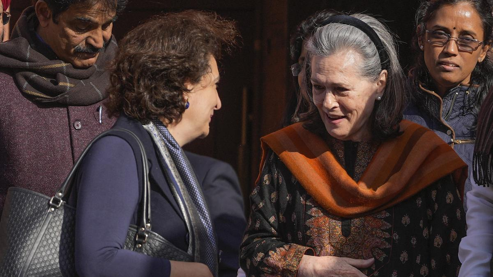

National-News
BJP demands return of Jawaharlal Nehru letters from former Congress chief Sonia Gandhi
The BJP said that Prime Minister Nehru’s correspondence, presently in the possession of Mrs. Sonia Gandhi, were not mere letters, but historical documents
The Bharatiya Janata Party (BJP) on Monday (December 16, 2024) demanded that the letters of first Prime Minister Jawaharlal Nehru to various eminent personalities, which in 2008 were purportedly taken from the Nehru Memorial Museum and Library to the residence of former Congress president Sonia Gandhi, be returned. The Nehru Memorial Museum and Library was renamed as the Prime Ministers’ Museum and Library (PMML) last year. At a press conference, BJP national spokesperson and MP Sambit Patra questioned the decision to send important letters, containing “Pt. Jawaharlal Nehru’s correspondence with Lady Mountbatten, Babu Jagjivan Ram, and Jayaprakash Narayan, to Sonia Gandhi’s residence,” stating that those were not mere letters, but historical documents. He said the nation had the right to know the content of the discussions. Follow Parliament Winter Session Day 17 LIVE Updates Dr. Patra said in February this year, during a PMML committee meeting, the issue was brought into the public domain for the first time. “It was revealed that, during Jawaharlal Nehru’s time, when emails and mobile phones did not exist, communication took place through traditional correspondence. The letters of Jawaharlal Nehru were donated to the Nehru Memorial Museum and Library in 1971. They were later reviewed in 2008 by the then UPA chairperson Sonia Gandhi’s representative, M.V. Rajan, who studied Nehru’s letters and identified several important ones,” he said. The BJP leader said on May 5, 2008, with approval from the then director of the Nehru Memorial Library, a large number of significant documents, including correspondences between the first Prime Minister and various prominent figures, were packed into 51 cartons and taken away to Ms. Gandhi’s residence by Mr. Rajan. “Newspapers have named that those correspondences included letters between Nehru and Edwina Mountbatten, letters between Nehru and Lok Nayak Jayaprakash Narayan, who led a strong movement against India’s darkest chapter the ‘Emergency’, and correspondence between Nehru and Jagjivan Ram,” Dr. Patra said. “The documents related to Nehru are not just letters, but historical records and not personal property...they are part of India’s national heritage. Therefore, the PMML committee decided to seek a legal opinion...after seeking legal opinion, a letter was written in December by Ahmedabad-based historian Rizwan Qadri, a member of the Prime Minister Museum Memorial Library, to Leader of Opposition [Lok Sabha] Rahul Gandhi. The letter stated that 51 cartons containing letters from Jawaharlal Nehru were with UPA’s former president Sonia Gandhi, and requested assistance in bringing back this national heritage,” he said. “It is both surprising and saddening that, instead of being digitised and scanned for public access as planned in 2010, Sonia Gandhi took possession of these letters before the digitisation process could begin. This raises doubts, as it is only natural to question what the correspondence contained that the Gandhi family did not want to be made public,” Dr. Patra said, adding that the two serious issues involved were “the sense of entitlement by the first family, believing that it was their property to reclaim at will, and second, the content of these letters”. Dr. Patra had earlier raised the issue in the Lok Sabha during Question Hour but Union Culture Minister Gejendra Singh Shekhawat declined to answer, saying his query was unrelated to the written question submitted in advance. The BJP leader, at the press conference, also highlighted the “sharp criticism” of Mr. Gandhi from his ally, Jammu & Kashmir Chief Minister Omar Abdullah, who purportedly said, “If Rahul Gandhi doesn’t know how to fight elections, he should not blame the EVM [Electronic Voting Machines]...leadership is earned, not demanded”. Reacting to BJP’s demand, Congress Whip in Lok Sabha Manickam Tagore said this was a diversionary tactic and the BJP and the Rashtriya Swayamsevak Sangh always had a problem with PM Nehru.